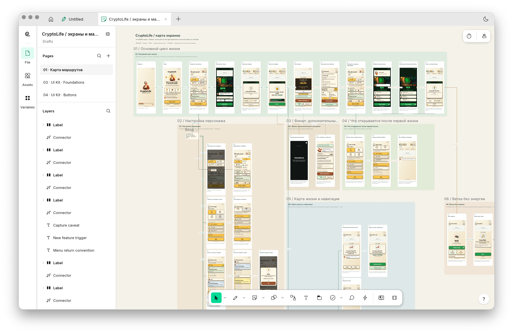

2025
Закупаю товар в Китае
и думаю, как попасть в IT
2026
Мои приложения в сторах
- Идея и код
- Экраны
- Интеграции
- Стор
- Рост ↺
Что делаю я
Что делает АИ
Придумываю идею и модель данных
Описываю дата-флоу, принимаю архитектурные решения
Пишет код
По готовым правилам архитектуры
Скриншот: Xcode / Android Studio + чат, где АИ пишет код
- Идея и код
- Экраны
- Интеграции
- Стор
- Рост ↺
Что делаю я
Что делает АИ
Определяю продуктовый флоу
Выбираю и корректирую варианты
Прототипирует экраны
Раскладывает всё приложение в редакторе

- Идея и код
- Экраны
- Интеграции
- Стор
- Рост ↺
Что делаю я
Что делает АИ
Выбираю SDK, аналитику, MMP, рекламу
Проверяю, что каждое событие доходит
Встраивает SDK
Размечает события
Скриншот: события в дашборде — Firebase DebugView / AppsFlyer / Adjust
- Идея и код
- Экраны
- Интеграции
- Стор
- Рост ↺
Что делаю я
Что делает АИ
Решаю, как продаём приложение
Вместе с АИ собираем тексты стора
Ресёрч ключевых слов
Переводит всё на 50 языков
Скриншот: App Store Connect — список локализаций (или String Catalog с 50 языками)
- Идея и код
- Экраны
- Интеграции
- Стор
- Рост ↺
Что делаю я
Что делает АИ
Смотрю аналитику, наливаю трафик
Решаю, что поправить
Вносит правки
Новая версия — и снова в стор
Скриншот: аналитика или рекламный кабинет — Google Ads / Meta
📱Приложение
🧩SDK
📊Аналитика
🎯Атрибуция
🔗MMP
📣Google Ads
📣Meta Ads
🚰Трафик
🔁Тест полного круга
💰Юнит-экономика
🔄сделал
протестировал
исправил
повторил
протестировал
исправил
повторил
Код ≈ 0
Приложений — миллионы
Внимание людей — дорого
Дистрибуция
👁
👵💻бабушка из Бразилии + GPT
Мои приложения
иконка
2Speak
Подписка
QR
иконка
Crypto Life
Реклама
QR
иконка
[криптоигра 2]
Реклама
QR
Вопросы?